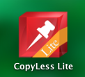

クリップボードの内容を保存するアプリをいろいろ試してみた
概要
⌘ + c でコピーした項目を、リスト状に保存しておけるアプリを探していた。
事の発端は、長らく使ってたClipMenuというアプリケーションの開発が停滞しているっぽくて、
ClipMenu
10.6向けリリースを最後に停止してるんだよね、、、
バグレポとか数回、半年以上前にやったんだけど音沙汰ないし、オープンでもないから改修参加も出来ないしで、
そろそろ後継探すべ、、ってことで。
何に使ってたの
コーディングとか。
ある機能Aを作る時、まずまるっと動くとこまでコード書いて、
その後、連携する先の機能Bを書いて、
その中でAに返す情報を書いて、、
とかする時に使ってた。
ようは、
記述する内容が複数のシーケンスとかファイルとか段取りとかにネストする時、それを見越して
予めコピーしとく、という。
Aに渡す予定の情報を、いちいちAに戻って確認してなにやら、っていうのが面倒だったので、
Aを書く時点でAに渡すべき情報を一旦書いてしまって⌘ + cとかしておいて、消して、
B書く過程でコピペとか移動とか色々すると思うけど
Bの中でAの情報使いたい時、Aを見に行かずに、クリップボードの履歴から掘り出して貼る、とか。
覚えておくのが面倒なことは、マシンに覚えておいてもらおうぜ的な。
(ただしパスワード、てめーは駄目だ。)
お題：
ゆるっとTwで聞いてみたけど、そもどんなものを探しているのか判りづらかったと思うし、
自分で探す + しりあいづてに聞いてみるなどした。
⌘ + c した項目が、リスト状にならぶやつ。
選択すると、現在フォーカスがあたっているアプリケーションに対して、ペーストが行える、というもの。
MacでOSX 10.8以降対応してればOK。
以下、Candidates:候補アプリ
Flycut
じぶんで見つけたもの。
オープンソースで、Github上にコードがあった。
特定キーショートカットを押している間だけ、過去にcしたものが表示されて、
左右でどれかを選んで離した瞬間ペースト、という
「おまえ、、、これ、、、」
的なUIを体験できた。スクリーンショットも取れない。。。
無し。
唯一凄いなーと思ったのが、秘匿フィールド(文字が*とかに変わるフィールド)の内容は記録しない、という点。
UI的に恐ろしく使いづらいので、コミットする気にでもならないと使わなそう。
CopyLess (Light)
教えてもらったもの１。
無料版と有償版がある。画面とかは無償版のもの。
有償版は¥600
cした内容が、リストで アイコン + 内容 として表示される。
QuickLookにも対応していて、ペーストするものがどんななのか、見れる。
Webブラウザとかで見てる途中の内容とかもコピペできるし、
性能はClipMenu(今回見限ったやつ)に非常に近い。
ClipMenuよりも便利な内容として、検索窓とかもついてて、非常に有用。⌘+fでフォーカス移る点
メニューバー上のアイコン
と、メニュー

Appアイコン

見た目

上部バーを消した所。

QuickLookしたとこ

設定画面
できることが多すぎ + 有用。
特にすげーと思った内容をアップ。
ショートカット、けっこう細かくセット可能。Favoとかもある。

表示項目をカスタマイズ可能、メニューバーからも消せる。正直メニューバーにモノが並ばない方が好きなので助かる。
Use compact とかやると、全項目が80%くらいのサイズになる。

Clyppan
教えてもらいもの２。
有償版のみ。¥250
基本性能はCopyLessと全く同じ。
cした項目をfavoriteできる、というのがある。 ふぁぼ。
お好きでしょうか、ふぁぼ。
ふぁぼった項目は別途Favoriteメニューに残すことができる。
正直自分はこの機能あんま使わない。
自分が使った難点としては、PrefernceがAppのウインドウからしかアクセスできないところ。
メニューバー上のアイコンからは触れない。
何故。
メニューバー上のアイコン

Appアイコン
見た目

QuickLookしたとこ

設定画面


という事で
自分はCopyLessをつかうことにしましたとさ。